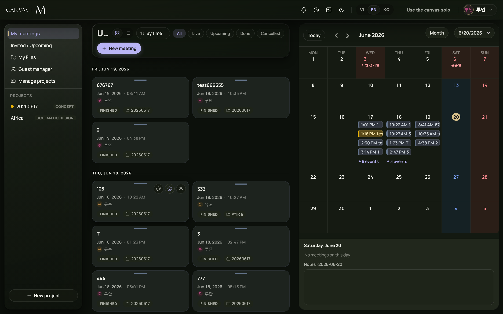

My meetings & Invited/Upcoming
Your home base: the cards for meetings you own and meetings you're invited to, what their colours mean, and how to pick up where you left off.

- 1 Brand & top bar — the Canvas M wordmark on the left; the action cluster on the right (notifications, history, wallpaper, theme, language, Use the canvas solo, and your account chip).
- 2 Left sidebar — your views: My meetings and Invited / Upcoming, plus the list of Projects you belong to.
- 3 Middle column — the meeting cards for whatever you picked on the left. A header shows the context name, a Grid/List toggle, a Sort by menu and status filter chips.
- 4 Right calendar — a month calendar that always stays visible, tinted to match your meeting colours. Drag its left edge to make it wider or narrower.
- 5 Resume banner — appears above everything when you left a live meeting open and came back; one click drops you straight back in.
Reading and opening a card
- Each card shows the meeting's title (optional emoji icon and topic), its date and time, the creator (avatar + name), a coloured status pill, and — in the overview and invited lists — a clickable project chip.
- Click the body of a card to open the meeting. A live or scheduled one joins you; a finished one opens read-only for review.
- Click the project chip on a card to jump straight to that project's list instead of opening the meeting.
- Use Grid / List in the header to switch the layout, and Sort by to order by By time, By title or By status.
- Use the status chips — All, Live, Upcoming, Done, Cancelled — to narrow the list to one lifecycle stage.
→ When sorted By time the list groups by day with Today / Tomorrow / date separators — upcoming days first (nearest first), then past days (most recent first).
Two small icon buttons on every card — a Palette and a Details (eye) — let you tint the card or open its full detail panel. If the cards can't load you'll see Couldn't load — check your network connection. with Retry; an empty list reads No meetings in this project yet.
The colours a card can wear
A green Live pill and a pulsing live dot. Clicking the card joins the meeting in progress.
An Upcoming card carries a Scheduled pill and its planned date and time. Joining goes through the start gate until the host begins.
A Finished or Cancelled pill marks a closed meeting. Opening it shows the canvas read-only — you can review and extract, but not change anything.
Glance at the pill before you click: green means walk straight in, a date means it has not started, and a grey pill means review-only.
The Resume banner
If you closed the tab or refreshed while a meeting was still going, the dashboard greets you with a Resume meeting banner above the columns, showing the meeting's title. One click takes you straight back in.
The banner is careful: it only appears for a meeting that is genuinely resumable. A meeting that has since been ended for everyone, or cancelled, never offers Resume — the banner re-checks the meeting's real status when you return to the tab, and quietly removes itself if the meeting is over. A scheduled meeting that has not started yet is not offered either; you join those through the normal start gate.
Separately, the Use the canvas solo button in the top bar drops you onto a blank private canvas with no meeting and nobody else — handy for a quick sketch. Leaving it returns you to the dashboard.
Meeting lifecycle and what you can do
| Status | Pill | On the card | What clicking does |
|---|---|---|---|
| Scheduled | Scheduled | Planned date & time shown | Goes through the start gate; you wait until the host starts |
| Live | Live | Pulsing live dot; LIVE NOW in the bell | Joins the meeting immediately |
| Finished | Finished | Greyed | Opens read-only — review and extract only |
| Cancelled | Cancelled | Greyed | Opens read-only; the organizer cancelled it |
These four are the only canonical statuses. Older meetings may carry legacy labels, but Canvas M maps them onto this set so the pill is always one of these four.
Starting a scheduled meeting, ending one for everyone, cancelling and restoring are organizer / project-authority actions. As a participant you only ever join, review, or answer an invitation.
Dashboard troubleshooting
The middle column shows "Couldn't load" — The server didn't respond when fetching your meetings or projects
Click Retry; check your internet connection if it keeps failing → 15.4
A card won't open — The room couldn't be reached or you don't have access
You'll see "Couldn't open the meeting…"; confirm you were invited and try again → 15.5
An invitation isn't in the bell — It's already finished, cancelled, or you already answered or joined
The bell only lists open, unanswered invitations; check the card in your lists instead → 15.7
The Resume banner disappeared — The host ended or cancelled the meeting while you were away
Expected — the banner re-checks status on focus and drops dead meetings → 15.8
No "New meeting" or project tools — Those are organizer / internal-staff controls
Ask a host to schedule the meeting and invite you → 15.4
Most dashboard errors are transient network hiccups — a Retry usually clears them. If sign-in itself fails, that's covered earlier in the login chapter.